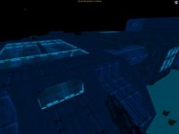
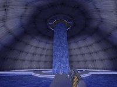
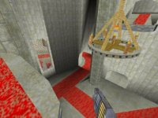
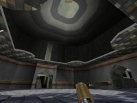
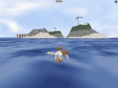
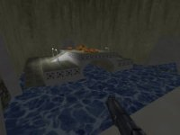

|  | Deep Nebula |
|---|---|
| A somewhat small research facility, located many fathoms below the surface, and surrounded by a pressure shield. Includes an airlock for escaping into the frigid waters, an airtank to ensure you survive the trip, a call switch in the control room to drop depth charges, and many other surprises. | |
|  | Vanilla Slug |
| Originally a water processing plant, this facility has been refitted to provide the ultimate arena for the most popular blood sport in the galaxy - Death Match. Nicknamed Vanilla, the arena offers to anyone foolish enough to enter, a watery death. | |
|  | Minas Fragith darkjedi86 |
| Thou are entering the Sacred Realm of Minas Fragith. Here, someone hath stopped all motion of time for all living substances, from the water to the inhabitants of Minas Fragith. The War for Minas Fragith hath begun..." | |
|  | Murky Fate GH_wasica |
| Watch your back as well as the sky as you blast through this arena. With multiple entrances and floors to every room, chances are you won't see your enemy coming until it's too late. | |
|  | Tropical Island SIM_BLIMKE |
| Gather your wits and grab your saber. You'll have to be as surefooted as a billy goat to survive one minute on these rocky islands. Being stranded in the sea has never been this much fun. | |
|  | Fallen Once Jepman |
| First came the wind, then the storm, and then the dam broke down. Water started to flood block after block in the city of Solonia. Reacting quickly, the mayor had the blocks blocked off before the water got to the more important sections of the city... Unfortunately, a handful of warriors were trapped. Now they have only their weapons to survive.. |